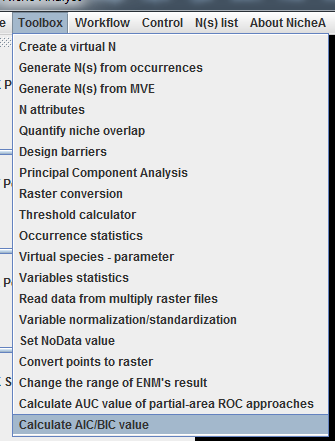
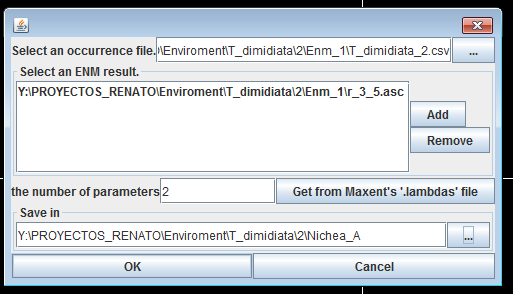
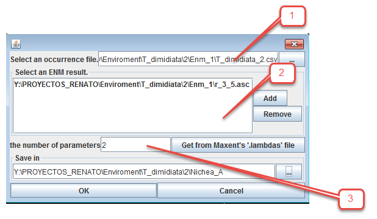
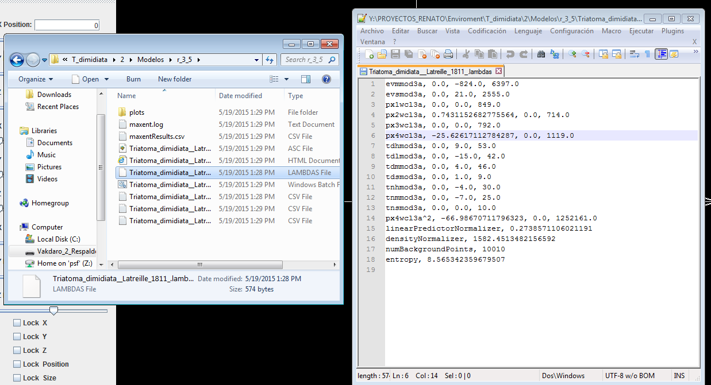
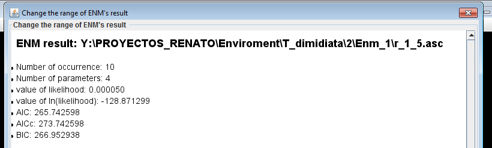

Guide to obtain AIC (Akaike Information Criterion) with NicheA
Guide to obtain AIC (Akaike Information Criterion) with NicheA
Nichea 3.0 implemented an option to the “model selection” tool in the ENMTOOLS software that can be employed for several model algorithms (e.g., GLM, NicheA, Maxent).
In NicheA, select “Calculate AIC/BIC value” from the Toolbox menu.
Figure 1. The menu to invoke this function

A window will appear with some options. Here we have to choose the proper files to calculate de AIC index. We will need to fill the textbox’s at this order: occurrence points in.csv extension, the Maxent output in .asc file, and then the .lambdas file from the Maxent model.
Figure 2. The dialog for this function

Figure 3. Detail of the dialog for this function.

The “number of parameters” used by this file will appear, in this case “2.” You can explore the number o Maxent’s parameters by opening the .lambdas file with a text editor and look for the parameters used. For models other than Maxent you can write the number of parameters in this section.
Figure 4. A sample .lambdas file generated in Maxent.

Finally we select “OK” and then we wait for the pop up window with the result:
Figure 5. The result for this function
